Префектура Канагава · Ёкосука · памятник
«THE AXIS OF PEACE»: луч мира над холмом в Ёкосуке, где стояла батарея
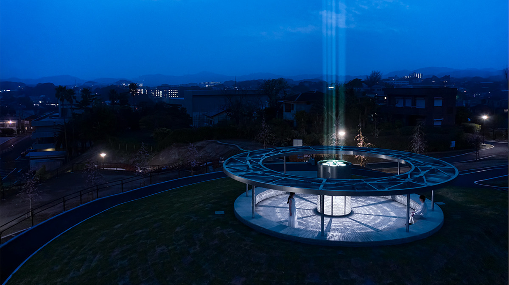
На холме над Ёкосукой, откуда видны Токийский залив и остров Сарусима, стоит круглый павильон с колонной в центре. Днём сквозь его крышу проходит солнце, а вечером он превращается в маяк, который посылает в небо свет мира.
Память места
Батарея, ставшая парком
Парк «Хэйва тюо», Центральный парк мира, открыли в Ёкосуке в 1970 году как место, посвящённое мечте о мире. С его холма видны Токийский залив и остров Сарусима, и за этот вид парк любят и горожане, и приезжие. Когда парк решили обновить, здесь задумали поставить и памятник миру. Проект и строительство взяла на себя компания HAKUTEN, которая занимается дизайном пространств и событий, вместе со студией Panoramatiks.
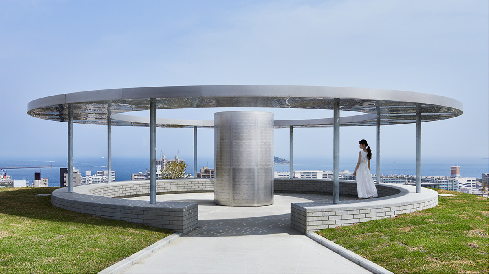
Прежде чем рисовать, авторы долго изучали место и выяснили, что во время войны на этом холме стояла артиллерийская батарея: высокая точка с широким обзором подходила для неё лучше всего. Следов старых батарей в Ёкосуке много, и они до сих пор хранят память о прошлом. Поэтому решили не строить что-то совсем новое, а взять черты бывшей батареи и вложить их в символ мира, чтобы памятник связал прошлое и настоящее.
Узор фундамента батареи, рельеф кирпича, из которого строили здешние здания: всё это не копировали буквально, а переносили в дизайн как характер, как «выражение лица» места.
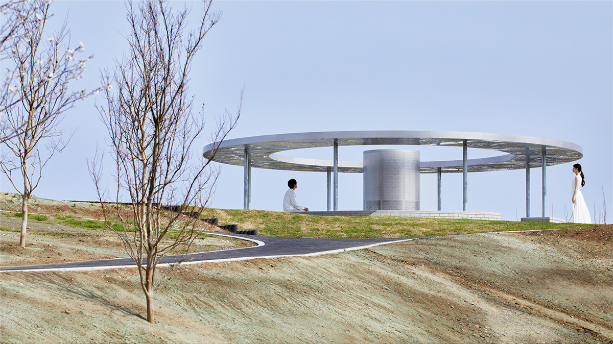
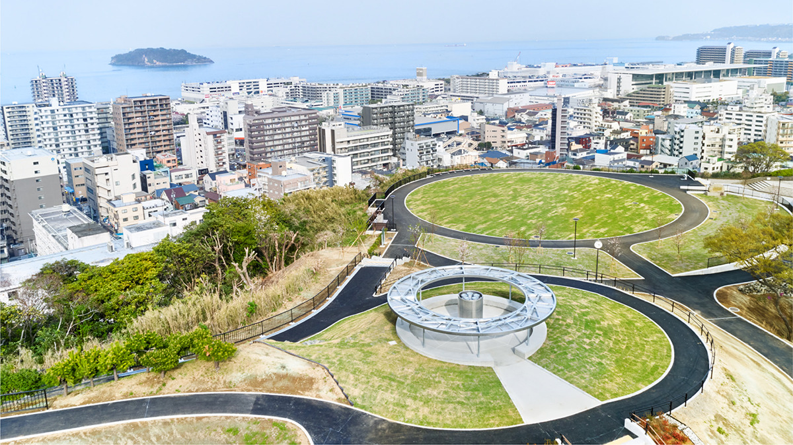
Сакура
Клеймо со старого кирпича
Когда в парке начались работы, из земли достали много кирпичей, из которых когда-то строили батарею. На них стояло клеймо в виде цветка сакуры, знак кирпича из Ёкосуки. Это клеймо авторы тоже сочли важной частью памяти места и захотели перенести его на новый памятник.
К старому кирпичу прижали глину и получили оттиск клейма. Глиняную форму оцифровали 3D-сканером, а затем с помощью 3D-принтера перенесли рисунок на памятник.
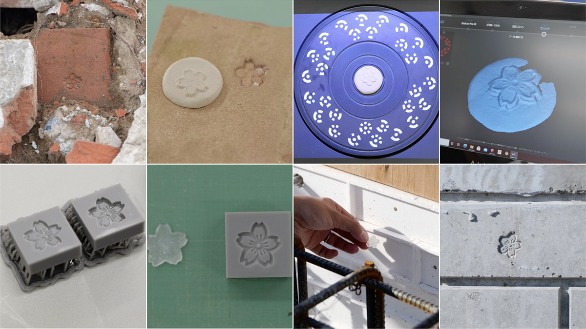
Ось мира
Луч длиной больше километра
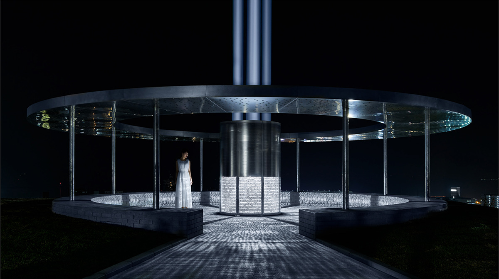
После заката памятник превращается в «световую башню» и посылает в небо луч, который становится незыблемой осью мира. Свет поднимается на высоту больше 1000 метров, и его видно издалека, поэтому мысль о мире оказывается рядом и в обычный день. Парк служит местом эвакуации для большой части города. Если при бедствии в городе пропадёт электричество, свет включится от генератора, и памятник, как маяк, покажет людям дорогу к парку. Авторы хотели, чтобы памятник напоминал каждому о стремлении к миру, которое понемногу стирается из памяти.
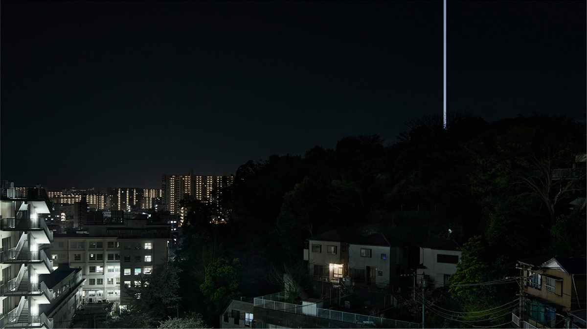
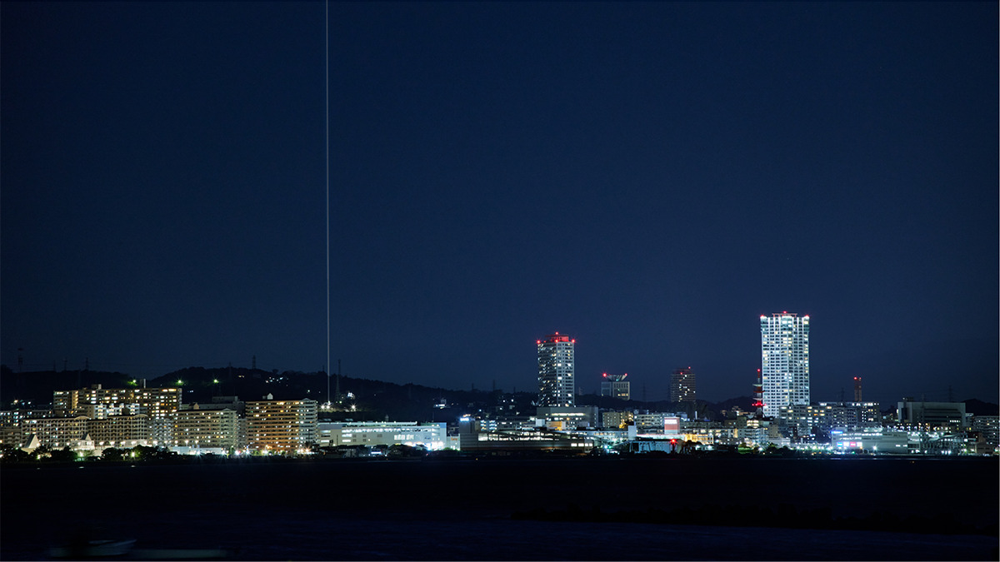
Круги мира
Кольца, нарисованные горожанами
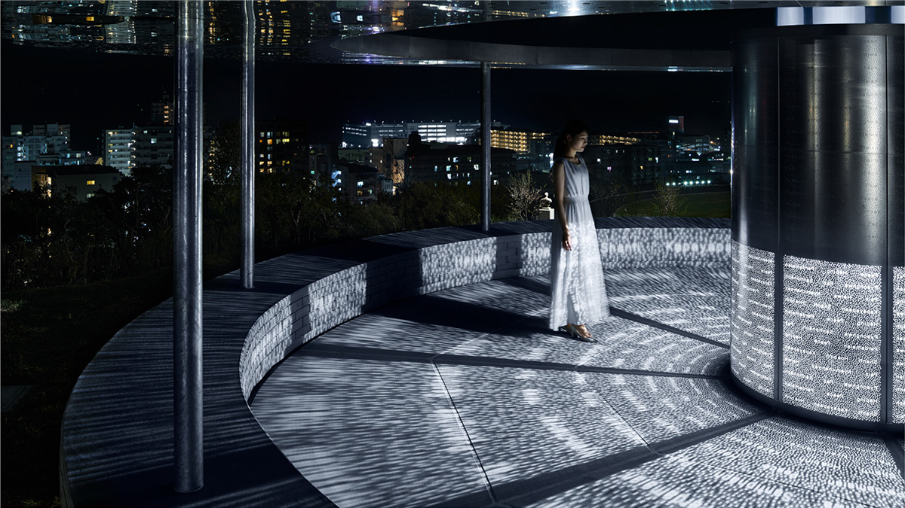
Крыша и центральная колонна памятника покрыты множеством круглых отверстий. Круг издавна означает бесконечность и вечность, и в нём заложено желание, чтобы мир длился вечно. Жители Ёкосуки рисовали свои круги, их собрали, отсканировали и превратили в данные: так набралось много «колец мира».
Расположение кругов тоже связано с местом: узор построили по морскому ветру, который дует над холмом, и каждый круг поставили на своё место. По готовым данным в крыше и колонне вырезали отверстия лазером, и неровные, непохожие друг на друга круги, нарисованные людьми, стали частью памятника. Памятник создавали в годы пандемии коронавируса, когда связи между людьми ослабли, и авторы хотели, чтобы собранные вместе круги напомнили, как эти связи важны.
Днём солнце проходит сквозь круги, и человек оказывается в пятнах света, нарисованных жителями. Ночью памятник наполняется маленькими светлыми кругами, в которых живут пожелания мира, и они перекликаются с огнями домов, видными с холма. На полу и стенах проступает слово «мир» на 12 языках.
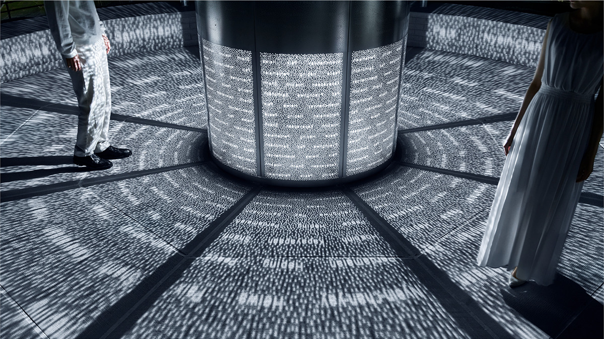
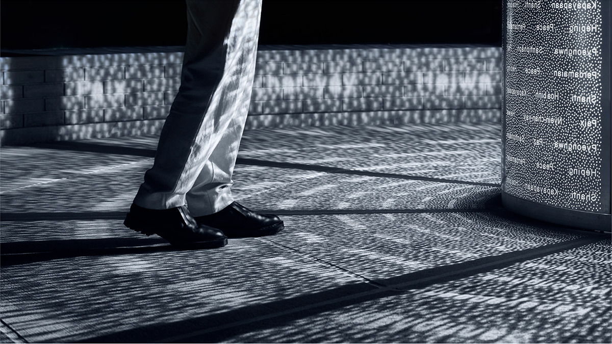
Если окажетесь в Ёкосуке, задержитесь до вечера, чтобы увидеть, как луч «THE AXIS OF PEACE» уходит в ночное небо.
Памятник миру «THE AXIS OF PEACE»
- Адрес
- префектура Канагава, Ёкосука, Фукададай, 19, в парке «Хэйва тюо»
- Часы работы
- подсветка с заката до 21:00 с апреля по сентябрь и до 20:00 с октября по март. Слова «мир» на полу видны каждый вечер, луч в небо включают 1-го числа каждого месяца, а также 6, 9 и 15 августа и 15 февраля
- Сайт
- hakuten.co.jp
Фото: Nacása & Partners, Акира Араи.